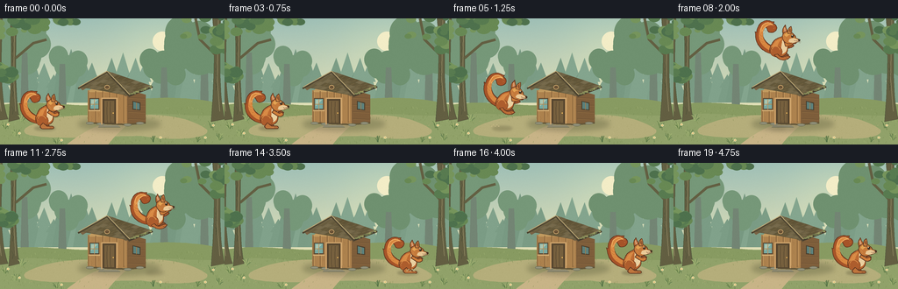
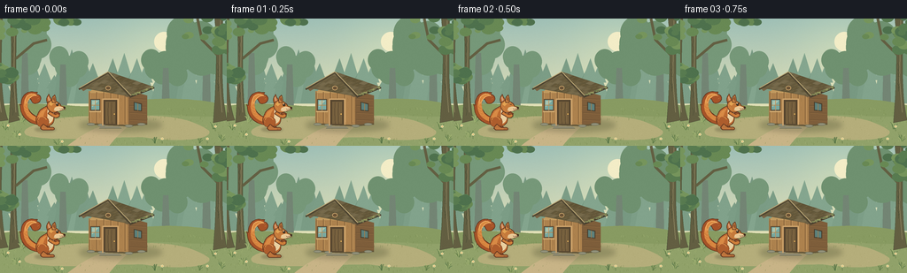

CODING AGENTS AS PIXEL WORLD MODELS
traex/GPT-6.1-Sol · dynamic_spatial_relationship_0024
点击播放 · 原生 RGB 像素
逐轮保存的候选
回放视频、检查图与代码变化。
每份候选均可单独播放。实际图片检查记录在下方工具轨迹中。
候选 01播放与检查图
点击播放 · 原生 RGB 像素


展开代码变化
--- 上一保存版本
+++ 本次保存版本
@@ -0,0 +1,296 @@
+from pathlib import Path
+import math, json
+import numpy as np
+from PIL import Image, ImageDraw, ImageFilter
+import artifact_io
+
+ROOT = Path(__file__).resolve().parent
+SPEC = json.loads((ROOT/'task_spec.json').read_text())
+W,H = SPEC['width'], SPEC['height']
+S = 4
+rng = np.random.default_rng(27)
+
+def rgb(h):
+ return tuple(int(h[i:i+2],16) for i in (1,3,5)) if isinstance(h,str) else h
+
+def pts(p): return [(round(x*S),round(y*S)) for x,y in p]
+def line(im,p,c,w=1): ImageDraw.Draw(im).line(pts(p), fill=rgb(c), width=max(1,round(w*S)),joint='curve')
+def poly(im,p,c): ImageDraw.Draw(im).polygon(pts(p), fill=rgb(c))
+def ellipse(im,b,c,outline=None,width=.6):
+ ImageDraw.Draw(im).ellipse(tuple(round(v*S) for v in b),fill=rgb(c),outline=rgb(outline) if outline else None,width=max(1,round(width*S)))
+def bezier(p):
+ # M, C, Q, L, Z compact, sampled smooth curves.
+ out=[]; pos=(0,0); start=None
+ for op in p:
+ if op[0]=='M': pos=op[1:]; start=pos;out.append(pos)
+ elif op[0]=='L': pos=op[1:];out.append(pos)
+ elif op[0]=='C':
+ a=pos;b=op[1:3];c=op[3:5];d=op[5:7]
+ for t in np.linspace(0,1,22)[1:]:
+ out.append(((1-t)**3*a[0]+3*(1-t)**2*t*b[0]+3*(1-t)*t*t*c[0]+t**3*d[0],(1-t)**3*a[1]+3*(1-t)**2*t*b[1]+3*(1-t)*t*t*c[1]+t**3*d[1]))
+ pos=d
+ elif op[0]=='Q':
+ a=pos;b=op[1:3];c=op[3:5]
+ for t in np.linspace(0,1,17)[1:]:out.append(((1-t)**2*a[0]+2*(1-t)*t*b[0]+t*t*c[0],(1-t)**2*a[1]+2*(1-t)*t*b[1]+t*t*c[1]))
+ pos=c
+ elif op[0]=='Z':out.append(start);pos=start
+ return out
+
+def path(im,p,c,outline=None,w=.6):
+ q=bezier(p)
+ if c:poly(im,q,c)
+ if outline:line(im,q,outline,w)
+
+def shade_shape(im,p,top,bottom,outline=None):
+ q=bezier(p);mask=Image.new('L',im.size);ImageDraw.Draw(mask).polygon(pts(q),fill=255)
+ ymin,ymax=min(y for x,y in q),max(y for x,y in q)
+ yy=np.arange(H*S)/(S);a=np.clip((yy-ymin)/max(ymax-ymin,.1),0,1)[:,None,None]
+ ar=np.broadcast_to(np.asarray(rgb(top))[None,None,:]*(1-a)+np.asarray(rgb(bottom))[None,None,:]*a,(H*S,W*S,3)).astype('uint8')
+ im.paste(Image.fromarray(ar), (0,0),mask)
+ if outline:line(im,q,outline,.65)
+
+# A softly lit, hand-painted clearing. All geometry is generated here.
+y,x=np.mgrid[0:H*S,0:W*S]/S
+sky0=np.array([158,191,182]);sky1=np.array([234,228,183]);f=np.clip(y/113,0,1)[...,None]
+arr=sky0*(1-f)+sky1*f
+sun=np.exp(-((x-188)**2+(y-30)**2)/(2*41**2))[...,None]
+arr=np.clip(arr+sun*np.array([19,13,3]),0,255)
+bg=Image.fromarray(arr.astype('uint8'))
+ellipse(bg,(174,15,196,37),'#f3edc7')
+# Far ridges and softly atmospheric tree silhouettes.
+for i in range(29):
+ xx=-12+i*10+rng.uniform(-4,4);hh=rng.uniform(31,62)
+ color=tuple(int(v) for v in np.array([127,160,137])+rng.uniform(-7,7))
+ poly(bg,[(xx-11,96),(xx-6,96-hh*.53),(xx-9,96-hh*.53),(xx,96-hh),(xx+8,96-hh*.53),(xx+5,96-hh*.53),(xx+13,96)],color)
+for xx,yy,ww in [(-11,25,41),(28,39,24),(233,21,29),(264,36,37),(71,52,18),(187,56,19)]:
+ col='#769879' if xx<100 else '#6f9170'
+ for j in range(9):
+ xxj=xx+rng.uniform(-ww,ww);yyj=yy+rng.uniform(-10,14)
+ ellipse(bg,(xxj-ww*.6,yyj-ww*.65,xxj+ww*.6,yyj+ww*.65),col)
+ path(bg,[('M',xx-3,yy),('L',xx+3,yy),('L',xx+5,111),('L',xx-5,111),('Z',)],'#738574')
+# Rolling ground.
+path(bg,[('M',0,99),('C',44,91,85,103,124,98),('C',166,88,214,88,256,98),('L',256,144),('L',0,144),('Z',)],'#889b62')
+path(bg,[('M',0,111),('C',65,103,89,119,149,111),('C',196,105,225,115,256,109),('L',256,144),('L',0,144),('Z',)],'#91a26a')
+# A curved sandy apron sets the moving squirrel apart from the grass.
+path(bg,[('M',35,122),('C',71,106,115,111,141,111),('C',181,108,214,111,236,127),('C',240,138,198,140,160,134),('C',105,135,53,139,30,132),('Q',23,127,35,122),('Z',)],'#b5ae7b')
+path(bg,[('M',76,144),('Q',105,121,127,119),('L',147,120),('Q',134,130,123,144),('Z',)],'#c8b487')
+# Fine ground texture and tiny stones, stable across every frame.
+for i in range(540):
+ xx=rng.uniform(0,W);yy=rng.uniform(102,H)
+ if 30<xx<235 and 117<yy<136:
+ color=rng.choice(['#b3a774','#c4b889','#a69f6a']);line(bg,[(xx,yy),(xx+rng.uniform(.3,1.3),yy-.1)],color,.25)
+ else:
+ color=rng.choice(['#788c51','#aaba7a','#73864a']);line(bg,[(xx,yy),(xx+rng.uniform(-1,1),yy-rng.uniform(.7,2.5))],color,.3)
+# Deep forest framing at the edges.
+for xx,wd in [(-4,13),(15,7),(247,9)]:
+ path(bg,[('M',xx-wd/2,0),('L',xx+wd/2,0),('C',xx+wd*.4,41,xx+wd*.2,87,xx+wd,115),('L',xx-wd*.7,118),('C',xx-wd*.25,68,xx-wd*.2,29,xx-wd/2,0),('Z',)],'#635f42','#4e563b')
+ line(bg,[(xx+wd*.2,2),(xx+wd*.06,69),(xx+wd*.4,106)],'#8c8460',.7)
+ for j in range(10):
+ yy=rng.uniform(8,105);line(bg,[(xx-2,yy),(xx,yy+4),(xx-1,yy+9)],'#4e5138',.4)
+line(bg,[(18,45),(38,28),(53,24)],'#635f42',3)
+line(bg,[(246,42),(228,24),(223,0)],'#635f42',3)
+for cx,cy,rad in [(0,4,30),(36,-6,32),(69,-8,20),(242,-1,34),(270,24,26),(1,61,13)]:
+ for j in range(25):
+ xx=cx+rng.uniform(-rad,rad);yy=cy+rng.uniform(-rad*.6,rad*.65);rr=rng.uniform(3,9)
+ ellipse(bg,(xx-rr,yy-rr*.7,xx+rr,yy+rr*.7),rng.choice(['#4e714d','#587b50','#688954','#76955c']))
+# Hut contact shadow, diffuse and laid on the clearing.
+shadow=Image.new('RGBA',bg.size)
+d=ImageDraw.Draw(shadow);d.ellipse((89*S,113*S,183*S,128*S),fill=(52,61,34,69))
+shadow=shadow.filter(ImageFilter.GaussianBlur(3*S));bg=Image.alpha_composite(bg.convert('RGBA'),shadow).convert('RGB')
+# Hut, slight 3/4 perspective, cedar plank walls and a shingled pitched roof.
+poly(bg,[(100,82),(145,82),(145,120),(100,119)],'#ad824e')
+poly(bg,[(145,81),(166,87),(166,119),(145,120)],'#7e5e3b')
+poly(bg,[(100,84),(122,64),(145,84)],'#c29b60')
+for xx in [101,109,117,125,133,141]:
+ line(bg,[(xx,83),(xx,119)],'#805e38',.65)
+ line(bg,[(xx+1,85),(xx+1,117)],'#c59b62',.55)
+ for j in range(4):
+ yy=rng.uniform(86,117)
+ line(bg,[(xx+3,yy),(xx+4,yy+2),(xx+3.5,yy+4)],'#9d7546',.3)
+for yy in [90,98,106,114]:
+ line(bg,[(146,yy),(165,yy+1)],'#614a31',.6)
+ line(bg,[(147,yy+1),(165,yy+2)],'#967143',.45)
+line(bg,[(99,119),(145,121),(166,119)],'#64573a',2)
+for bx,by in [(103,120),(115,121),(146,122),(160,120)]:
+ ellipse(bg,(bx-5,by-2,bx+4,by+1),'#92917a','#686b56',.4)
+# Front door with heavy posts, bent wood grains and little brass latch.
+poly(bg,[(117,92),(132,92),(132,120),(117,120)],'#55452f')
+poly(bg,[(119,94),(130,94),(130,119),(119,119)],'#76603e')
+for xx in [122,126]:
+ line(bg,[(xx,95),(xx-.3,107),(xx+.2,119)],'#4f412d',.6)
+ line(bg,[(xx+1,96),(xx+1,117)],'#90734a',.35)
+line(bg,[(116,121),(116,91),(133,91),(133,120)],'#cea36b',1.4)
+ellipse(bg,(128,107,130,109),'#deb15d','#64472e',.35)
+poly(bg,[(114,122),(134,122),(137,124),(112,124)],'#8f8a72')
+line(bg,[(112,124),(137,124)],'#686b55',.6)
+# Small blue-green glass window on the front left.
+poly(bg,[(102,91),(113,91),(113,105),(102,105)],'#5a4630')
+poly(bg,[(103,92),(112,92),(112,103),(103,103)],'#78aaa1')
+poly(bg,[(104,93),(111,93),(104,100)],'#acc5b0')
+line(bg,[(107.5,92),(107.5,104)],'#bd9460',.8)
+line(bg,[(103,98),(112,98)],'#b28b54',.8)
+line(bg,[(101,105),(114,105)],'#d4ad73',1.4)
+# Side window.
+poly(bg,[(151,94),(160,96),(160,105),(151,104)],'#493e2d')
+poly(bg,[(152,95),(159,97),(159,104),(152,103)],'#5c817c')
+line(bg,[(155.5,96),(155.5,104)],'#a17c4b',.8)
+# Roof main plane and triangular left cap.
+poly(bg,[(122,60),(173,77),(147,88),(90,78)],'#564d3a')
+poly(bg,[(90,78),(122,60),(147,88),(143,89),(121,66),(94,82)],'#796345')
+# Far roof is individual irregular weathered cedar shingles.
+A=np.array([122.,60.]);B=np.array([173.,77.]);C=np.array([147.,88.]);D=np.array([93.,78.])
+def roof(u,v):return (1-v)*((1-u)*A+u*B)+v*((1-u)*D+u*C)
+for row in range(5):
+ v0=row/5;v1=(row+1)/5
+ for col in range(9):
+ u0=max(0,(col-(.45 if row%2 else 0))/8);u1=min(1,(col+1-(.45 if row%2 else 0))/8)
+ if u1<=u0:continue
+ p=[roof(u0,v0),roof(u1,v0),roof(u1,v1),roof(u0,v1)]
+ color=np.array([106,94,64])+rng.integers(-12,13)
+ poly(bg,p,tuple(color));line(bg,[p[3],p[2]],'#514d36',.55)
+ line(bg,[p[0],p[3]],'#5b523b',.35)
+ q=roof((u0+u1)/2,v0+.035);r=roof((u0+u1)/2,v1-.02)
+ line(bg,[q,r],'#867452',.3)
+# Trim, gable vent and moss at the eaves.
+line(bg,[(89,80),(122,61),(148,89)],'#4f4632',2.2)
+line(bg,[(90,78),(122,60),(148,87)],'#beaa78',1)
+line(bg,[(148,88),(174,78)],'#473f2f',2)
+line(bg,[(150,86),(173,76)],'#9a8d60',.8)
+ellipse(bg,(119,76,125,81),'#6b5336','#d1aa70',.65)
+for j in range(27):
+ xx=rng.uniform(149,172);yy=88-(xx-148)*.4+rng.uniform(-2,0)
+ ellipse(bg,(xx-.9,yy-.6,xx+1.6,yy+.5),rng.choice(['#68734a','#89905b','#a09e62']))
+# Grass tufts and wild flowers in foreground, away from the action.
+for xx,yy in [(6,126),(18,134),(25,117),(241,125),(250,139),(175,141),(65,143),(225,141)]:
+ for j in range(9):
+ dx=rng.uniform(-5,5); ht=rng.uniform(3,8)
+ path(bg,[('M',xx+dx*.2,yy),('Q',xx+dx*.35,yy-ht*.7,xx+dx,yy-ht)],None,rng.choice(['#587548','#657f4a','#aabb78']),.5)
+for xx,yy in [(22,133),(9,123),(243,124),(234,138),(70,141),(183,138)]:
+ line(bg,[(xx,yy+3),(xx,yy-2)],'#5f794b',.45)
+ for a in np.linspace(0,math.tau,6)[:-1]:
+ cx=xx+math.cos(a)*1;cy=yy-2+math.sin(a)*1
+ ellipse(bg,(cx-.65,cy-.6,cx+.65,cy+.6),'#ede2ad')
+ ellipse(bg,(xx-.45,yy-2.4,xx+.45,yy-1.5),'#d9ab55')
+# Subtle fine paper grain (not temporal noise).
+grain=rng.normal(0,.55,(H*S,W*S,1))
+bg=Image.fromarray(np.uint8(np.clip(np.asarray(bg).astype(float)+grain,0,255)))
+
+
+def squirrel(im,x,y,angle=0,squash=1,flight=0,tailwave=0,blink=False):
+ # Articulated, curved silhouette; local origin is the hind-paw contact.
+ co,si=math.cos(angle),math.sin(angle)
+ def T(q):
+ a,b=q;a*=.97;b*=.97*squash
+ return (x+a*co-b*si,y+a*si+b*co)
+ def P(commands,fill,stroke='#603620',w=.65):
+ q=[T(v) for v in bezier(commands)]
+ if fill:poly(im,q,fill)
+ if stroke:line(im,q,stroke,w)
+ def L(q,col,w=.55):line(im,[T(v) for v in q],col,w)
+ def E(box,col,stroke=None):
+ x0,y0,x1,y1=box
+ q=[T(((x0+x1)/2+(x1-x0)/2*math.cos(a),(y0+y1)/2+(y1-y0)/2*math.sin(a))) for a in np.linspace(0,math.tau,40)]
+ poly(im,q,col)
+ if stroke:line(im,q+[q[0]],stroke,.5)
+ # Big unmistakable furry tail, curled toward the back, with a feathery outline.
+ tw=tailwave
+ P([('M',-7,-5),('C',-20,-5,-31,-14,-31+tw,-26),('L',-32+tw,-29),('L',-30+tw,-28),('C',-31+tw,-38,-23+tw,-46,-14+tw,-43),('L',-11+tw,-43),('L',-12+tw,-41),('C',-3+tw,-38,-8+tw,-29,-15+tw,-30),('C',-19+tw,-31,-18+tw,-37,-21+tw,-35),('C',-27+tw,-27,-19,-15,-8,-14),('C',-4,-12,-3,-6,-7,-5),('Z',)],'#a65328')
+ P([('M',-9,-8),('C',-25,-11,-30+tw,-24,-26+tw,-34),('C',-24+tw,-40,-18+tw,-43,-13+tw,-40),('C',-19+tw,-40,-25+tw,-33,-22+tw,-24),('C',-20,-16,-12,-13,-7,-12),('Z',)],'#d88740',None)
+ P([('M',-25+tw,-29),('C',-27+tw,-40,-18+tw,-44,-12+tw,-39),('C',-15+tw,-40,-21+tw,-38,-24+tw,-30)],None,'#efad61',1)
+ # Flowing fine fur locks follow the curl rather than random speckles.
+ for j in range(11):
+ yy=-15-j*1.65;xx=-21-4*math.sin(j/10*math.pi)+tw*.65
+ L([(xx-2,yy-2),(xx,yy),(xx+2,yy+.7)],'#e3a05a' if j%2 else '#b96730',.35)
+ for j in range(7):
+ aa=j/7*math.pi
+ xx=-18+tw+7*math.cos(aa);yy=-35-6*math.sin(aa)
+ L([(xx,yy),(xx+1.4,yy-1)],'#e3a260',.3)
+ # Far hind paw and far arm.
+ if flight:
+ P([('M',-5,-9),('Q',0,-4,7,-8),('L',10,-6),('Q',8,-3,3,-3),('L',-8,-5),('Z',)],'#88502d')
+ else:
+ P([('M',-5,-7),('L',-8,-1),('Q',-2,1,3,-1),('Q',4,-3,1,-4),('Z',)],'#92522c')
+ P([('M',3,-22),('Q',9,-17,12,-20),('L',15,-18),('Q',12,-14,7,-14),('L',1,-17),('Z',)],'#a1582d')
+ # Pear-shaped torso, rich russet shoulder and lighter chest.
+ P([('M',0,-27),('C',9,-25,10,-18,8,-13),('C',9,-7,4,-3,-3,-3),('C',-13,-3,-15,-10,-11,-17),('C',-9,-23,-4,-25,0,-27),('Z',)],'#bd6b32')
+ P([('M',1,-25),('C',8,-23,9,-19,7,-15),('C',8,-10,4,-6,-1,-6),('C',1,-11,0,-18,1,-25),('Z',)],'#ead0a0',None)
+ P([('M',-9,-17),('C',-7,-22,-3,-24,0,-24),('C',-5,-19,-4,-12,-7,-9),('C',-11,-10,-12,-14,-9,-17),('Z',)],'#d88a45',None)
+ # Round muscular hindquarters and soft orange fur highlights.
+ E((-12,-15,2,-2),'#ad5d2d','#774121')
+ P([('M',-10,-11),('C',-9,-16,-3,-16,-1,-11)],None,'#d98b47',1)
+ if flight>.4:
+ P([('M',-3,-6),('Q',1,-1,6,-4),('Q',10,-6,12,-4),('L',9,-1),('Q',3,2,-2,-1),('L',-7,-4),('Z',)],'#bb6c36')
+ L([(7,-3),(9,-2)],'#714028',.4)
+ else:
+ P([('M',-4,-6),('Q',-1,-3,1,-2),('L',7,-2),('Q',10,0,7,1),('L',-5,1),('Q',-8,0,-7,-3),('Z',)],'#be753d')
+ L([(4,-1),(4,.7)],'#75452a',.4);L([(6,-1),(6,.7)],'#75452a',.4)
+ # Near forearm lifted in the jump; compact hands in the resting pose.
+ if flight:
+ arm=[('M',3,-21),('Q',8,-20,13,-24),('Q',16,-25,18,-23),('Q',17,-20,14,-20),('Q',9,-16,5,-16),('Z',)]
+ else:
+ arm=[('M',3,-21),('Q',7,-18,10,-17),('L',13,-18),('Q',16,-16,13,-14),('Q',10,-12,6,-15),('L',1,-18),('Z',)]
+ P(arm,'#cd7d3a')
+ # Ear behind the head with dark tuft, and the cheek/head muzzle profile.
+ P([('M',1,-29),('Q',-2,-35,1,-39),('L',2,-41),('L',3,-38),('Q',6,-34,6,-30),('Z',)],'#b66b34')
+ P([('M',1,-36),('Q',1,-38,2,-38),('L',4,-32),('L',2,-32),('Z',)],'#d79c74',None)
+ P([('M',1,-31),('C',4,-35,10,-34,13,-31),('Q',16,-29,16,-27),('L',20,-26),('Q',22,-24,19,-23),('Q',16,-21,12,-21),('C',10,-18,3,-19,1,-24),('Q',-1,-27,1,-31),('Z',)],'#c57a3b')
+ P([('M',2,-29),('Q',6,-35,12,-31),('Q',8,-31,5,-27),('Z',)],'#e3a454',None)
+ P([('M',9,-25),('Q',14,-28,19,-25),('Q',21,-23,16,-22),('Q',12,-20,8,-22),('Z',)],'#e9c996',None)
+ # Second perky pointed ear, eye with a pinpoint catchlight.
+ P([('M',6,-31),('Q',5,-37,8,-39),('L',9,-40),('Q',11,-35,10,-31),('Z',)],'#c98443')
+ P([('M',7,-35),('L',8,-38),('Q',10,-35,9,-32),('Z',)],'#8e532f',None)
+ if blink:L([(11,-29),(13,-28.7)],'#35291d',.8)
+ else:
+ E((10.4,-30.3,13.5,-27.0),'#392a1d')
+ E((11,-30,11.9,-29.1),'#fff1d1')
+ E((12.6,-28.5,13,-28.1),'#a47a48')
+ E((19,-26,21.5,-24.1),'#423021')
+ L([(18.7,-23.7),(16,-23.1),(14.6,-23.8)],'#754832',.45)
+ L([(17,-24),(22.5,-23.2)],'#74513a',.22)
+ L([(17,-23.5),(22,-21.8)],'#74513a',.22)
+ # A few anatomically aligned shoulder and cheek fur strokes.
+ for q in [[(-7,-22),(-8,-20)],[(-5,-21),(-6,-19)],[(-11,-10),(-10,-8)],[(3,-26),(4,-24)],[(4,-24),(5,-23)],[(1,-28),(2,-27)]]:
+ L(q,'#e0a460',.35)
+
+frames=[]
+for k in range(SPEC['frames']):
+ im=bg.copy()
+ if k<=3:
+ xx=53.;yy=125.+.3*math.sin(k*1.3);a=0.;sq=1.;fl=0
+ elif k==4:
+ xx=54.;yy=125.;a=.12;sq=.79;fl=0
+ elif 5<=k<=12:
+ u=(k-5+.45)/8
+ xx=54+155*u;yy=125-80*4*u*(1-u)
+ # Stretched launch, tucked airborne paws, feet extend again before impact.
+ a=.29-.4*u;sq=1.;fl=1
+ elif k==13:
+ xx=209.;yy=125.;a=.09;sq=.79;fl=0
+ elif k==14:
+ xx=211.;yy=125.;a=.03;sq=.94;fl=0
+ else:
+ xx=211.;yy=125.+.2*math.sin(k);a=0;sq=1.;fl=0
+ height=125-yy
+ # Shadow remains on the ground below the squirrel, shrinking in midair.
+ lay=Image.new('RGBA',im.size);ld=ImageDraw.Draw(lay)
+ rad=10-height*.035;alpha=int(70-height*.47)
+ ld.ellipse(((xx-rad-4)*S,123*S,(xx+rad)*S,128*S),fill=(64,60,36,alpha))
+ lay=lay.filter(ImageFilter.GaussianBlur((1.2+height*.015)*S))
+ im=Image.alpha_composite(im.convert('RGBA'),lay).convert('RGB')
+ squirrel(im,xx,yy,a,sq,fl,.65*math.sin(k*.7),blink=k in [2,17])
+ # Two tiny puffs of dry earth directly beneath the takeoff/landing paws.
+ if k in [5,13,14]:
+ for j in range(5):
+ px=xx-6-j*2 if k==5 else xx-3+j*2
+ py=125-2-(j%2)*1.5
+ ellipse(im,(px-.65,py-.4,px+.65,py+.4),'#c2b482')
+ frames.append(np.asarray(im.resize((W,H),Image.Resampling.LANCZOS),dtype=np.uint8))
+frames=np.stack(frames)
+artifact_io.save(frames,ROOT)
+# Additional convenient standard video, also generated solely from these RGB frames.
+try:
+ import imageio.v2 as imageio
+ imageio.mimwrite(ROOT/'video.mp4',frames,fps=SPEC['fps'],codec='libx264',quality=9,macro_block_size=1,ffmpeg_params=['-pix_fmt','yuv420p'])
+except ImportError:
+ pass
+print('Saved',frames.shape,frames.dtype,'to',ROOT)
可观测工具轨迹
实际执行的命令与返回图片。
命令 1exit 0
/bin/bash -lc 'ls -la && cat prompt.txt && cat GENERATION_RULES.md && cat task_spec.json'
命令 2exit 0
/bin/bash -lc 'cat artifact_io.py'
命令 3exit 0
/bin/bash -lc "python - <<'PY' import importlib.util for m in ['numpy','PIL','aggdraw','imageio','imageio_ffmpeg']: print(m, bool(importlib.util.find_spec(m))) PY"
命令 4exit 0
/bin/bash -lc "cat > generate.py <<'PY'
from pathlib import Path
import math, json
import numpy as np
from PIL import Image, ImageDraw, ImageFilter
import artifact_io
ROOT = Path(__file__).resolve().parent
SPEC = json.loads((ROOT/'task_spec.json').read_text())
W,H = SPEC['width'], SPEC['height']
S = 4
rng = np.random.default_rng(27)
def rgb(h):
return tuple(int(h[i:i+2],16) for i in (1,3,5)) if isinstance(h,str) else h
def pts(p): return [(round(x*S),round(y*S)) for x,y in p]
def line(im,p,c,w=1): ImageDraw.Draw(im).line(pts(p), fill=rgb(c), width=max(1,round(w*S)),joint='curve')
def poly(im,p,c): ImageDraw.Draw(im).polygon(pts(p), fill=rgb(c))
def ellipse(im,b,c,outline=None,width=.6):
ImageDraw.Draw(im).ellipse(tuple(round(v*S) for v in b),fill=rgb(c),outline=rgb(outline) if outline else None,width=max(1,round(width*S)))
def bezier(p):
# M, C, Q, L, Z compact, sampled smooth curves.
out=[]; pos=(0,0); start=None
for op in p:
if op[0]=='M': pos=op[1:]; start=pos;out.append(pos)
elif op[0]=='L': pos=op[1:];out.append(pos)
elif op[0]=='C':
a=pos;b=op[1:3];c=op[3:5];d=op[5:7]
for t in np.linspace(0,1,22)[1:]:
out.append(((1-t)**3*a[0]+3*(1-t)**2*t*b[0]+3*(1-t)*t*t*c[0]+t**3*d[0],(1-t)**3*a[1]+3*(1-t)**2*t*b[1]+3*(1-t)*t*t*c[1]+t**3*d[1]))
pos=d
elif op[0]=='Q':
a=pos;b=op[1:3];c=op[3:5]
for t in np.linspace(0,1,17)[1:]:out.append(((1-t)**2*a[0]+2*(1-t)*t*b[0]+t*t*c[0],(1-t)**2*a[1]+2*(1-t)*t*b[1]+t*t*c[1]))
pos=c
elif op[0]=='Z':out.append(start);pos=start
return out
def path(im,p,c,outline=None,w=.6):
q=bezier(p)
if c:poly(im,q,c)
if outline:line(im,q,outline,w)
def shade_shape(im,p,top,bottom,outline=None):
q=bezier(p);mask=Image.new('L',im.size);ImageDraw.Draw(mask).polygon(pts(q),fill=255)
ymin,ymax=min(y for x,y in q),max(y for x,y in q)
yy=np.arange(H*S)/(S);a=np.clip((yy-ymin)/max(ymax-ymin,.1),0,1)[:,None,None]
ar=np.broadcast_to(np.asarray(rgb(top))[None,None,:]*(1-a)+np.asarray(rgb(bottom))[None,None,:]*a,(H*S,W*S,3)).astype('uint8')
im.paste(Image.fromarray(ar), (0,0),mask)
if outline:line(im,q,outline,.65)
# A softly lit, hand-painted clearing. All geometry is generated here.
y,x=np.mgrid[0:H*S,0:W*S]/S
sky0=np.array([158,191,182]);sky1=np.array([234,228,183]);f=np.clip(y/113,0,1)[...,None]
arr=sky0*(1-f)+sky1*f
sun=np.exp(-((x-188)**2+(y-30)**2)/(2*41**2))[...,None]
arr=np.clip(arr+sun*np.array([19,13,3]),0,255)
bg=Image.fromarray(arr.astype('uint8'))
ellipse(bg,(174,15,196,37),'#f3edc7')
# Far ridges and softly atmospheric tree silhouettes.
for i in range(29):
xx=-12+i*10+rng.uniform(-4,4);hh=rng.uniform(31,62)
color=tuple(int(v) for v in np.array([127,160,137])+rng.uniform(-7,7))
poly(bg,[(xx-11,96),(xx-6,96-hh*.53),(xx-9,96-hh*.53),(xx,96-hh),(xx+8,96-hh*.53),(xx+5,96-hh*.53),(xx+13,96)],color)
for xx,yy,ww in [(-11,25,41),(28,39,24),(233,21,29),(264,36,37),(71,52,18),(187,56,19)]:
col='#769879' if xx<100 else '#6f9170'
for j in range(9):
xxj=xx+rng.uniform(-ww,ww);yyj=yy+rng.uniform(-10,14)
ellipse(bg,(xxj-ww*.6,yyj-ww*.65,xxj+ww*.6,yyj+ww*.65),col)
path(bg,[('M',xx-3,yy),('L',xx+3,yy),('L',xx+5,111),('L',xx-5,111),('Z',)],'#738574')
# Rolling ground.
path(bg,[('M',0,99),('C',44,91,85,103,124,98),('C',166,88,214,88,256,98),('L',256,144),('L',0,144),('Z',)],'#889b62')
path(bg,[('M',0,111),('C',65,103,89,119,149,111),('C',196,105,225,115,256,109),('L',256,144),('L',0,144),('Z',)],'#91a26a')
# A curved sandy apron sets the moving squirrel apart from the grass.
path(bg,[('M',35,122),('C',71,106,115,111,141,111),('C',181,108,214,111,236,127),('C',240,138,198,140,160,134),('C',105,135,53,139,30,132),('Q',23,127,35,122),('Z',)],'#b5ae7b')
path(bg,[('M',76,144),('Q',105,121,127,119),('L',147,120),('Q',134,130,123,144),('Z',)],'#c8b487')
# Fine ground texture and tiny stones, stable across every frame.
for i in range(540):
xx=rng.uniform(0,W);yy=rng.uniform(102,H)
if 30<xx<235 and 117<yy<136:
color=rng.choice(['#b3a774','#c4b889','#a69f6a']);line(bg,[(xx,yy),(xx+rng.uniform(.3,1.3),yy-.1)],color,.25)
else:
color=rng.choice(['#788c51','#aaba7a','#73864a']);line(bg,[(xx,yy),(xx+rng.uniform(-1,1),yy-rng.uniform(.7,2.5))],color,.3)
# Deep forest framing at the edges.
for xx,wd in [(-4,13),(15,7),(247,9)]:
path(bg,[('M',xx-wd/2,0),('L',xx+wd/2,0),('C',xx+wd*.4,41,xx+wd*.2,87,xx+wd,115),('L',xx-wd*.7,118),('C',xx-wd*.25,68,xx-wd*.2,29,xx-wd/2,0),('Z',)],'#635f42','#4e563b')
line(bg,[(xx+wd*.2,2),(xx+wd*.06,69),(xx+wd*.4,106)],'#8c8460',.7)
for j in range(10):
yy=rng.uniform(8,105);line(bg,[(xx-2,yy),(xx,yy+4),(xx-1,yy+9)],'#4e5138',.4)
line(bg,[(18,45),(38,28),(53,24)],'#635f42',3)
line(bg,[(246,42),(228,24),(223,0)],'#635f42',3)
for cx,cy,rad in [(0,4,30),(36,-6,32),(69,-8,20),(242,-1,34),(270,24,26),(1,61,13)]:
for j in range(25):
xx=cx+rng.uniform(-rad,rad);yy=cy+rng.uniform(-rad*.6,rad*.65);rr=rng.uniform(3,9)
ellipse(bg,(xx-rr,yy-rr*.7,xx+rr,yy+rr*.7),rng.choice(['#4e714d','#587b50','#688954','#76955c']))
# Hut contact shadow, diffuse and laid on the clearing.
shadow=Image.new('RGBA',bg.size)
d=ImageDraw.Draw(shadow);d.ellipse((89*S,113*S,183*S,128*S),fill=(52,61,34,69))
shadow=shadow.filter(ImageFilter.GaussianBlur(3*S));bg=Image.alpha_composite(bg.convert('RGBA'),shadow).convert('RGB')
# Hut, slight 3/4 perspective, cedar plank walls and a shingled pitched roof.
poly(bg,[(100,82),(145,82),(145,120),(100,119)],'#ad824e')
poly(bg,[(145,81),(166,87),(166,119),(145,120)],'#7e5e3b')
poly(bg,[(100,84),(122,64),(145,84)],'#c29b60')
for xx in [101,109,117,125,133,141]:
line(bg,[(xx,83),(xx,119)],'#805e38',.65)
line(bg,[(xx+1,85),(xx+1,117)],'#c59b62',.55)
for j in range(4):
yy=rng.uniform(86,117)
line(bg,[(xx+3,yy),(xx+4,yy+2),(xx+3.5,yy+4)],'#9d7546',.3)
for yy in [90,98,106,114]:
line(bg,[(146,yy),(165,yy+1)],'#614a31',.6)
line(bg,[(147,yy+1),(165,yy+2)],'#967143',.45)
line(bg,[(99,119),(145,121),(166,119)],'#64573a',2)
for bx,by in [(103,120),(115,121),(146,122),(160,120)]:
ellipse(bg,(bx-5,by-2,bx+4,by+1),'#92917a','#686b56',.4)
# Front door with heavy posts, bent wood grains and little brass latch.
poly(bg,[(117,92),(132,92),(132,120),(117,120)],'#55452f')
poly(bg,[(119,94),(130,94),(130,119),(119,119)],'#76603e')
for xx in [122,126]:
line(bg,[(xx,95),(xx-.3,107),(xx+.2,119)],'#4f412d',.6)
line(bg,[(xx+1,96),(xx+1,117)],'#90734a',.35)
line(bg,[(116,121),(116,91),(133,91),(133,120)],'#cea36b',1.4)
ellipse(bg,(128,107,130,109),'#deb15d','#64472e',.35)
poly(bg,[(114,122),(134,122),(137,124),(112,124)],'#8f8a72')
line(bg,[(112,124),(137,124)],'#686b55',.6)
# Small blue-green glass window on the front left.
poly(bg,[(102,91),(113,91),(113,105),(102,105)],'#5a4630')
poly(bg,[(103,92),(112,92),(112,103),(103,103)],'#78aaa1')
poly(bg,[(104,93),(111,93),(104,100)],'#acc5b0')
line(bg,[(107.5,92),(107.5,104)],'#bd9460',.8)
line(bg,[(103,98),(112,98)],'#b28b54',.8)
line(bg,[(101,105),(114,105)],'#d4ad73',1.4)
# Side window.
poly(bg,[(151,94),(160,96),(160,105),(151,104)],'#493e2d')
poly(bg,[(152,95),(159,97),(159,104),(152,103)],'#5c817c')
line(bg,[(155.5,96),(155.5,104)],'#a17c4b',.8)
# Roof main plane and triangular left cap.
poly(bg,[(122,60),(173,77),(147,88),(90,78)],'#564d3a')
poly(bg,[(90,78),(122,60),(147,88),(143,89),(121,66),(94,82)],'#796345')
# Far roof is individual irregular weathered cedar shingles.
A=np.array([122.,60.]);B=np.array([173.,77.]);C=np.array([147.,88.]);D=np.array([93.,78.])
def roof(u,v):return (1-v)*((1-u)*A+u*B)+v*((1-u)*D+u*C)
for row in range(5):
v0=row/5;v1=(row+1)/5
for col in range(9):
u0=max(0,(col-(.45 if row%2 else 0))/8);u1=min(1,(col+1-(.45 if row%2 else 0))/8)
if u1<=u0:continue
p=[roof(u0,v0),roof(u1,v0),roof(u1,v1),roof(u0,v1)]
color=np.array([106,94,64])+rng.integers(-12,13)
poly(bg,p,tuple(color));line(bg,[p[3],p[2]],'#514d36',.55)
line(bg,[p[0],p[3]],'#5b523b',.35)
q=roof((u0+u1)/2,v0+.035);r=roof((u0+u1)/2,v1-.02)
line(bg,[q,r],'#867452',.3)
# Trim, gable vent and moss at the eaves.
line(bg,[(89,80),(122,61),(148,89)],'#4f4632',2.2)
line(bg,[(90,78),(122,60),(148,87)],'#beaa78',1)
line(bg,[(148,88),(174,78)],'#473f2f',2)
line(bg,[(150,86),(173,76)],'#9a8d60',.8)
ellipse(bg,(119,76,125,81),'#6b5336','#d1aa70',.65)
for j in range(27):
xx=rng.uniform(149,172);yy=88-(xx-148)*.4+rng.uniform(-2,0)
ellipse(bg,(xx-.9,yy-.6,xx+1.6,yy+.5),rng.choice(['#68734a','#89905b','#a09e62']))
# Grass tufts and wild flowers in foreground, away from the action.
for xx,yy in [(6,126),(18,134),(25,117),(241,125),(250,139),(175,141),(65,143),(225,141)]:
for j in range(9):
dx=rng.uniform(-5,5); ht=rng.uniform(3,8)
path(bg,[('M',xx+dx*.2,yy),('Q',xx+dx*.35,yy-ht*.7,xx+dx,yy-ht)],None,rng.choice(['#587548','#657f4a','#aabb78']),.5)
for xx,yy in [(22,133),(9,123),(243,124),(234,138),(70,141),(183,138)]:
line(bg,[(xx,yy+3),(xx,yy-2)],'#5f794b',.45)
for a in np.linspace(0,math.tau,6)[:-1]:
cx=xx+math.cos(a)*1;cy=yy-2+math.sin(a)*1
ellipse(bg,(cx-.65,cy-.6,cx+.65,cy+.6),'#ede2ad')
ellipse(bg,(xx-.45,yy-2.4,xx+.45,yy-1.5),'#d9ab55')
# Subtle fine paper grain (not temporal noise).
grain=rng.normal(0,.55,(H*S,W*S,1))
bg=Image.fromarray(np.uint8(np.clip(np.asarray(bg).astype(float)+grain,0,255)))
def squirrel(im,x,y,angle=0,squash=1,flight=0,tailwave=0,blink=False):
# Articulated, curved silhouette; local origin is the hind-paw contact.
co,si=math.cos(angle),math.sin(angle)
def T(q):
a,b=q;a*=.97;b*=.97*squash
return (x+a*co-b*si,y+a*si+b*co)
def P(commands,fill,stroke='#603620',w=.65):
q=[T(v) for v in bezier(commands)]
if fill:poly(im,q,fill)
if stroke:line(im,q,stroke,w)
def L(q,col,w=.55):line(im,[T(v) for v in q],col,w)
def E(box,col,stroke=None):
x0,y0,x1,y1=box
q=[T(((x0+x1)/2+(x1-x0)/2*math.cos(a),(y0+y1)/2+(y1-y0)/2*math.sin(a))) for a in np.linspace(0,math.tau,40)]
poly(im,q,col)
if stroke:line(im,q+[q[0]],stroke,.5)
# Big unmistakable furry tail, curled toward the back, with a feathery outline.
tw=tailwave
P([('M',-7,-5),('C',-20,-5,-31,-14,-31+tw,-26),('L',-32+tw,-29),('L',-30+tw,-28),('C',-31+tw,-38,-23+tw,-46,-14+tw,-43),('L',-11+tw,-43),('L',-12+tw,-41),('C',-3+tw,-38,-8+tw,-29,-15+tw,-30),('C',-19+tw,-31,-18+tw,-37,-21+tw,-35),('C',-27+tw,-27,-19,-15,-8,-14),('C',-4,-12,-3,-6,-7,-5),('Z',)],'#a65328')
P([('M',-9,-8),('C',-25,-11,-30+tw,-24,-26+tw,-34),('C',-24+tw,-40,-18+tw,-43,-13+tw,-40),('C',-19+tw,-40,-25+tw,-33,-22+tw,-24),('C',-20,-16,-12,-13,-7,-12),('Z',)],'#d88740',None)
P([('M',-25+tw,-29),('C',-27+tw,-40,-18+tw,-44,-12+tw,-39),('C',-15+tw,-40,-21+tw,-38,-24+tw,-30)],None,'#efad61',1)
# Flowing fine fur locks follow the curl rather than random speckles.
for j in range(11):
yy=-15-j*1.65;xx=-21-4*math.sin(j/10*math.pi)+tw*.65
L([(xx-2,yy-2),(xx,yy),(xx+2,yy+.7)],'#e3a05a' if j%2 else '#b96730',.35)
for j in range(7):
aa=j/7*math.pi
xx=-18+tw+7*math.cos(aa);yy=-35-6*math.sin(aa)
L([(xx,yy),(xx+1.4,yy-1)],'#e3a260',.3)
# Far hind paw and far arm.
if flight:
P([('M',-5,-9),('Q',0,-4,7,-8),('L',10,-6),('Q',8,-3,3,-3),('L',-8,-5),('Z',)],'#88502d')
else:
P([('M',-5,-7),('L',-8,-1),('Q',-2,1,3,-1),('Q',4,-3,1,-4),('Z',)],'#92522c')
P([('M',3,-22),('Q',9,-17,12,-20),('L',15,-18),('Q',12,-14,7,-14),('L',1,-17),('Z',)],'#a1582d')
# Pear-shaped torso, rich russet shoulder and lighter chest.
P([('M',0,-27),('C',9,-25,10,-18,8,-13),('C',9,-7,4,-3,-3,-3),('C',-13,-3,-15,-10,-11,-17),('C',-9,-23,-4,-25,0,-27),('Z',)],'#bd6b32')
P([('M',1,-25),('C',8,-23,9,-19,7,-15),('C',8,-10,4,-6,-1,-6),('C',1,-11,0,-18,1,-25),('Z',)],'#ead0a0',None)
P([('M',-9,-17),('C',-7,-22,-3,-24,0,-24),('C',-5,-19,-4,-12,-7,-9),('C',-11,-10,-12,-14,-9,-17),('Z',)],'#d88a45',None)
# Round muscular hindquarters and soft orange fur highlights.
E((-12,-15,2,-2),'#ad5d2d','#774121')
P([('M',-10,-11),('C',-9,-16,-3,-16,-1,-11)],None,'#d98b47',1)
if flight>.4:
P([('M',-3,-6),('Q',1,-1,6,-4),('Q',10,-6,12,-4),('L',9,-1),('Q',3,2,-2,-1),('L',-7,-4),('Z',)],'#bb6c36')
L([(7,-3),(9,-2)],'#714028',.4)
else:
P([('M',-4,-6),('Q',-1,-3,1,-2),('L',7,-2),('Q',10,0,7,1),('L',-5,1),('Q',-8,0,-7,-3),('Z',)],'#be753d')
L([(4,-1),(4,.7)],'#75452a',.4);L([(6,-1),(6,.7)],'#75452a',.4)
# Near forearm lifted in the jump; compact hands in the resting pose.
if flight:
arm=[('M',3,-21),('Q',8,-20,13,-24),('Q',16,-25,18,-23),('Q',17,-20,14,-20),('Q',9,-16,5,-16),('Z',)]
else:
arm=[('M',3,-21),('Q',7,-18,10,-17),('L',13,-18),('Q',16,-16,13,-14),('Q',10,-12,6,-15),('L',1,-18),('Z',)]
P(arm,'#cd7d3a')
# Ear behind the head with dark tuft, and the cheek/head muzzle profile.
P([('M',1,-29),('Q',-2,-35,1,-39),('L',2,-41),('L',3,-38),('Q',6,-34,6,-30),('Z',)],'#b66b34')
P([('M',1,-36),('Q',1,-38,2,-38),('L',4,-32),('L',2,-32),('Z',)],'#d79c74',None)
P([('M',1,-31),('C',4,-35,10,-34,13,-31),('Q',16,-29,16,-27),('L',20,-26),('Q',22,-24,19,-23),('Q',16,-21,12,-21),('C',10,-18,3,-19,1,-24),('Q',-1,-27,1,-31),('Z',)],'#c57a3b')
P([('M',2,-29),('Q',6,-35,12,-31),('Q',8,-31,5,-27),('Z',)],'#e3a454',None)
P([('M',9,-25),('Q',14,-28,19,-25),('Q',21,-23,16,-22),('Q',12,-20,8,-22),('Z',)],'#e9c996',None)
# Second perky pointed ear, eye with a pinpoint catchlight.
P([('M',6,-31),('Q',5,-37,8,-39),('L',9,-40),('Q',11,-35,10,-31),('Z',)],'#c98443')
P([('M',7,-35),('L',8,-38),('Q',10,-35,9,-32),('Z',)],'#8e532f',None)
if blink:L([(11,-29),(13,-28.7)],'#35291d',.8)
else:
E((10.4,-30.3,13.5,-27.0),'#392a1d')
E((11,-30,11.9,-29.1),'#fff1d1')
E((12.6,-28.5,13,-28.1),'#a47a48')
E((19,-26,21.5,-24.1),'#423021')
L([(18.7,-23.7),(16,-23.1),(14.6,-23.8)],'#754832',.45)
L([(17,-24),(22.5,-23.2)],'#74513a',.22)
L([(17,-23.5),(22,-21.8)],'#74513a',.22)
# A few anatomically aligned shoulder and cheek fur strokes.
for q in [[(-7,-22),(-8,-20)],[(-5,-21),(-6,-19)],[(-11,-10),(-10,-8)],[(3,-26),(4,-24)],[(4,-24),(5,-23)],[(1,-28),(2,-27)]]:
L(q,'#e0a460',.35)
frames=[]
for k in range(SPEC['frames']):
im=bg.copy()
if k<=3:
xx=53.;yy=125.+.3*math.sin(k*1.3);a=0.;sq=1.;fl=0
elif k==4:
xx=54.;yy=125.;a=.12;sq=.79;fl=0
elif 5<=k<=12:
u=(k-5+.45)/8
xx=54+155*u;yy=125-80*4*u*(1-u)
# Stretched launch, tucked airborne paws, feet extend again before impact.
a=.29-.4*u;sq=1.;fl=1
elif k==13:
xx=209.;yy=125.;a=.09;sq=.79;fl=0
elif k==14:
xx=211.;yy=125.;a=.03;sq=.94;fl=0
else:
xx=211.;yy=125.+.2*math.sin(k);a=0;sq=1.;fl=0
height=125-yy
# Shadow remains on the ground below the squirrel, shrinking in midair.
lay=Image.new('RGBA',im.size);ld=ImageDraw.Draw(lay)
rad=10-height*.035;alpha=int(70-height*.47)
ld.ellipse(((xx-rad-4)*S,123*S,(xx+rad)*S,128*S),fill=(64,60,36,alpha))
lay=lay.filter(ImageFilter.GaussianBlur((1.2+height*.015)*S))
im=Image.alpha_composite(im.convert('RGBA'),lay).convert('RGB')
squirrel(im,xx,yy,a,sq,fl,.65*math.sin(k*.7),blink=k in [2,17])
# Two tiny puffs of dry earth directly beneath the takeoff/landing paws.
if k in [5,13,14]:
for j in range(5):
px=xx-6-j*2 if k==5 else xx-3+j*2
py=125-2-(j%2)*1.5
ellipse(im,(px-.65,py-.4,px+.65,py+.4),'#c2b482')
frames.append(np.asarray(im.resize((W,H),Image.Resampling.LANCZOS),dtype=np.uint8))
frames=np.stack(frames)
artifact_io.save(frames,ROOT)
# Additional convenient standard video, also generated solely from these RGB frames.
try:
import imageio.v2 as imageio
imageio.mimwrite(ROOT/'video.mp4',frames,fps=SPEC['fps'],codec='libx264',quality=9,macro_block_size=1,ffmpeg_params=['-pix_fmt','yuv420p'])
except ImportError:
pass
print('Saved',frames.shape,frames.dtype,'to',ROOT)
PY
python generate.py
ls -lh pixels.npz index.html inspection.png video.mp4"命令 5exit 0
/bin/bash -lc "python - <<'PY'
from pathlib import Path
import numpy as np
from PIL import Image
p=np.load('pixels.npz')['pixels']
assert p.shape==(144,256,20)
files=sorted(Path('frames').glob('*.png'))
assert len(files)==20
assert all(Image.open(f).mode=='RGB' and Image.open(f).size==(256,144) for f in files)
print('Verified: 20 RGB frames, 256x144; playback at 4 fps for 5 seconds.')
PY"保存候选 1 份；完成命令 5 次；可验证图片返回 0 张。原始 API 响应与完整日志保留在本地。